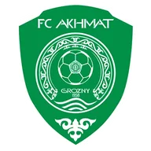

Балтика — Динамо Махачкала итог матча 8 ноября
- ТурнирРПЛ
Коротко о матче
- Итог: Балтика — Динамо Махачкала 0:1.
- Расчёт модели до матча не сохранился.
- По форме команды близки: Балтика — 1 победа в последних 5, Динамо Махачкала — 0 побед.
- Голы за игру в последних 5: Балтика — 1,0 забито и 1,0 пропущено, Динамо Махачкала — 0,4 и 2,6.
- Дома Балтика: 2 победы в 7 матчах; в гостях Динамо Махачкала: 2 победы в 7.
- Последняя очная встреча — 05.04.2026: Динамо Махачкала — Балтика 2:2.
Форма: последние матчи
Балтика 1 победа из 5
 П2:3
П2:3
Н0:0 Н0:0
Н0:0- Н1:1
 В2:1
В2:1
Динамо Махачкала 0 побед из 5
- П1:3
 П0:4
П0:4- Н1:1
- П0:2
- П0:3
Личные встречи
- Динамо Махачкала2:2Балтика
- Балтика2:0Динамо Махачкала
Положение в таблице
| Команда | Место | И | В | Н | П | Голы | Очки |
|---|---|---|---|---|---|---|---|
| Балтика | 9 | 14 | 4 | 5 | 5 | 17:15 | 17 |
| Динамо Махачкала | 11 | 14 | 5 | 1 | 8 | 17:26 | 16 |
Другие матчи РПЛ в этот день
Страница клуба: Балтика · Страница клуба: Динамо Махачкала · Лига: РПЛ · Прогноз на сегодня: РПЛ · Все матчи дня колодой
Материалы носят информационный характер и не гарантируют результат. Реклама букмекеров на сайте не размещается. Сайт только для совершеннолетних (18+).